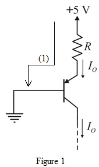

Apply Kirchhoff’s voltage law in loop (1) as shown in Figure 1.
Thus, the value of  that will result in is.
that will result in is.
Refer to Figure P6.141 in the text book.
Draw the modified circuit.

Apply Kirchhoff’s voltage law in loop (1) as shown in Figure 1.
Thus, the value of that will result in is.
The largest voltage that can be applied to the collector is,
Thus, the largest voltage that can be connected to the collector terminal is.